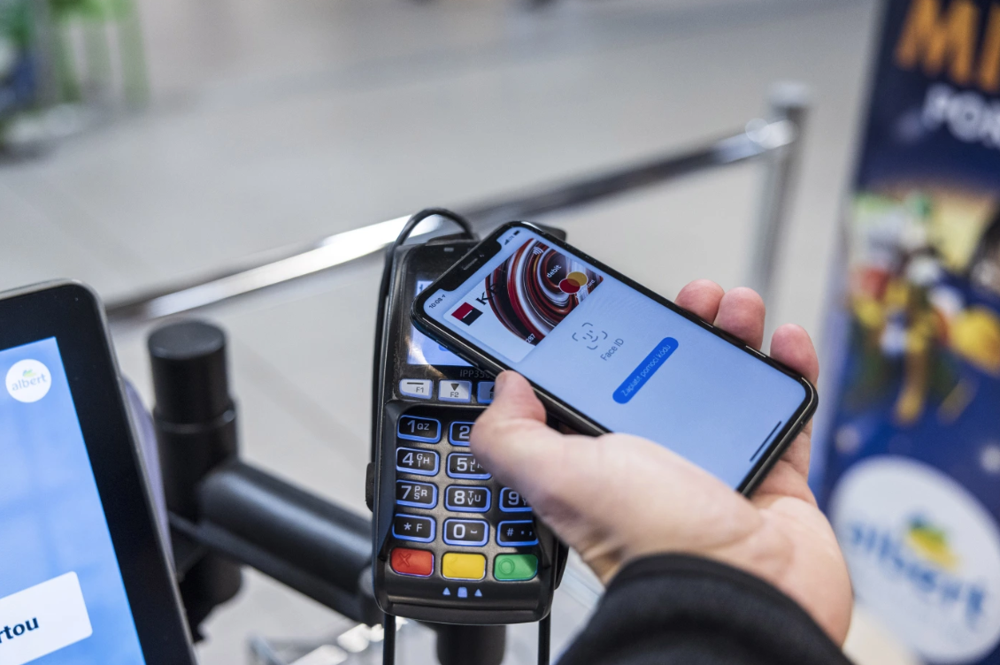

Apple faces charges over Apple Pay following EU antitrust complaint
Romain Dillet@romaindillet / 9:03 PM GMT+4•May 2, 2022
The European Commission has shared the preliminary findings of an antitrust case focused on Apple Pay on iOS devices. According to antitrust investigators, Apple abused its dominant position as competitors can’t provide NFC-enabled contactless payments on the iPhone to develop other mobile wallets and compete fairly with Apple Pay.
The Commission says NFC is a standard technology for contactless payments and should be opened to anyone. While third-party developers can take advantage of APIs to read and write NFC tags, they can’t use the NFC antenna in their apps to build Apple Pay competitors.
“Mobile payments play a rapidly growing role in our digital economy. It is important for the integration of European Payments markets that consumers benefit from a competitive and innovative payments landscape,” Executive Vice President of the European Commission Margrethe Vestager said in a statement.
“We have indications that Apple restricted third-party access to key technology necessary to develop rival mobile wallet solutions on Apple's devices. In our Statement of Objections, we preliminarily found that Apple may have restricted competition, to the benefit of its own solution Apple Pay. If confirmed, such a conduct would be illegal under our competition rules,” she added.
According to Brussels regulators, the main issue is that NFC is available in almost all payments terminals but only Apple Pay can wirelessly communicate with payment terminals via NFC. It’s a standardized, safe and seamless way to pay, which could explain why Apple Pay gained market shares.
Today’s statement of objections is the result of an investigation that was formally opened in June 2020. At the time, the Commission announced it would look at Apple Pay as a whole. Apple Pay can also be used to pay online and in app. But the Commission now says the only issue is the restriction on NFC payments.
“Apple Pay is only one of many options available to European consumers for making payments, and has ensured equal access to NFC while setting industry-leading standards for privacy and security,” Apple told Reuters in a statement.
And this is true. Other companies, such as PayPal and Starbucks, have relied on QR codes for mobile payments on the iPhone. Usually, people show a QR code on their phone and store employees scan that code.
Some mobile wallets, such as WeChat Pay and AliPay, have even thrived with the use of QR codes. But it’s been an uphill battle as paying with Apple Pay remains more seamless for the end customers.
Earlier this year, Apple even announced that it plans to introduce a new tap-to-pay feature. It would turn any iPhone into a contactless payment terminal. Sure, it would support Android phones and Google Pay. But iPhone users would only be able to pay with Apple Pay.
Following the statement of objections, Apple now has the opportunity to respond to the charges. The company can send written answers or ask for an oral hearing. Apple risks a hefty fine if the Commission comes to the conclusion that Apple has breached antitrust rules.